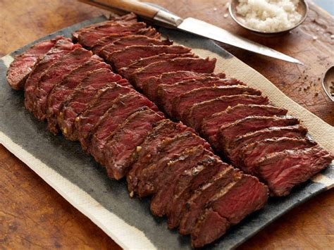

Hanger Steak Recipe.

Description
This butcher or hanger steak recipe is great pan-cooked, broiled, or grilled. It takes to marinade wonderfully and really can be substituted for any cut of steak.
Ingredients:
- 1 (2 pound) butcher's steak (hanger steak)
- salt and freshly ground black pepper to taste
- 1 tablespoon clarified butter
- Sugar
- ⅔ cup chicken broth
- 2 teaspoons balsamic vinegar
- 2 tablespoons cold butter, cut into cubes
- salt to taste
Steps:
- Remove all silver skin and extra fat from steak.
- Carefully cut out the connective tissue that connects the 2 halves of the steak, separating the whole into 2 long pieces.
- Cut lobe of meat from one half (it's a piece that is slightly separated from the larger half).
- Then cut each of the 2 larger halves into 2 steaks each. Sprinkle with salt and pepper.
- Heat skillet over high heat. Add clarified butter when pan is hot, then place the steaks in the pan. Reduce heat to medium.
- Cook until browned on all sides, firm, and reddish-pink on the inside.
- An instant-read thermometer inserted into the center should read 125 degrees F (52 degrees C), a total of about 12 minutes. (This cut of meat has a sort of triangular shape, so about 4 minutes per side.)
- Transfer to a warm plate and tent with foil to let steaks rest and allow temperature to rise to 130 degrees F.
- Pour broth into skillet set over medium heat. Stir with a wooden spoon scraping up the browned bits from the bottom.
- When brownings dissolve and liquid begins to reduce after 2 or 3 minutes, reduce heat to low.
- Add accumulated juices from the meat, balsamic vinegar, and butter chunks. Cook and stir until butter melts.
- If liquid has reduced too much, add a splash of broth. Taste to check if sauce needs a bit of salt.
- To serve, slice steaks and spoon pan sauce over them.